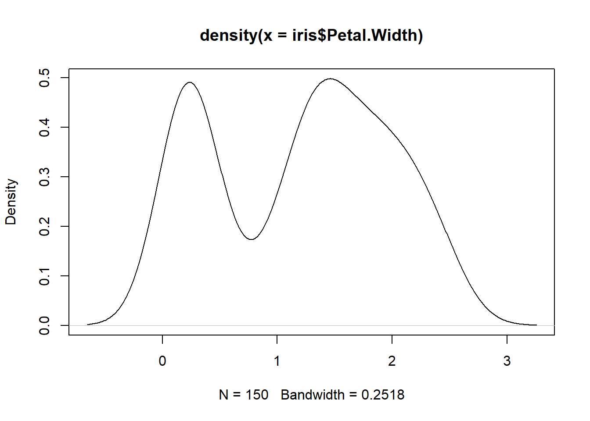

#Generating kernel density estimate for Petal Width in the iris dataset
y<-density(iris$Petal.Width)The Role of the Data Scientist and Other Musings
Introduction
While the overall purpose of this document has a single purpose – to serve as my Homework 1 submission – it inherently serves two additional purposes. First, this document will offer my perspective on the data scientist role. Second, this document will demonstrate my ability to perform certain tasks in R and appropriately display the performance of those tasks.
The Role of the Data Scientist
What is Being a Data Scientist About?
At its core, being a data scientist is about leveraging an organization’s data to improve the organization’s outcomes, whether those outcomes be sales volume, employee efficiency, or any other “north star” for the organization. To leverage data for improved outcomes, a data scientist must:
- Collect and process raw data related to the outcome of interest
- Often completed in partnership with data engineers
- Summarize and visualize the data to understand their general properties and tendencies
- Model the data with an eye toward improved organizational decision-making or outcomes
- Communicate findings in a way that makes the findings easily interpreted and actionable
A data scientist will repeat this workflow for each project. To do so effectively and efficiency, a data scientist must have both a breadth and depth of knowledge. For example, the data scientist must have a solid foundation in mathematics and statistics. The data scientist must also be a competent statistical and algorithmic programmer in languages such as R and Python. Finally, the data scientist must understand the domain they are working in, whether that be deep tech, finance, natural sciences, or any other industrial segment of the economy. Otherwise, the data scientist will struggle to identify the appropriate data for solving a given problem and may develop business solutions that are not directly deployable. Of course, the degree to which the data scientist must independently understand the domain depends on the organization’s size and structure, as some organizations pair data scientists with colleagues who have the domain expertise necessary to effectively solve a given organizational problem.
What Differences/Similarities Exist Between Data Scientists and Statisticians?
While many in the broad analytical world attempt to draw distinct lines between the role of data scientists and statisticians, I believe the reality is much more blurred. Often these lines are drawn by comparing the role of a data scientist with the classical role of a statistician. It may be true that academic and applied statisticians have historically been asked to focus on designing experiments, manual data collection techniques, and statistical modeling techniques to answer empirical questions with an eye toward quantifying uncertainty. However, the role of the statistician has become increasingly broad due to innovations in big data and computing capabilities, and in many ways this broadening has occurred in parallel to the expansion of the data scientist role.
As the role of the data scientist has grown from a focus on classical statistical models such as least squares regression and logistic regression to computer science-developed models such as boosted trees and deep learning models, it is true that measures of model quality have moved from p-values and information criteria to prediction accuracy-focused metrics like test mean squared error. However, statisticians are now being asked to understand the statistical properties of these models borne out of other computer science. Industry and government are increasingly interested in quantifying the uncertainty related to predictions and predictor/feature importance metrics, and they are also interested in conceptualizing the propagation of model biases. Thus, while statisticians have historically focused on developing their own models and characterizing their statistical properties, they are now being asked to characterize the statistical properties developed outside the statistics field and used in data science. This has given rise to the statistics sub-field of statistical learning. Looking ahead, as companies become increasingly interested in expanding causal inference capabilities in AI models, I suspect the lines to increasingly blur between data science and statistics roles, as well as between machine learning/AI engineer and statistics roles. Statisticians, as well as their closely related peers in fields like econometrics, have laid the foundation for causal inference, and innovations in this space will likely come from greater integration of the statistics field into machine learning and AI model development.
Overall, the differences and similarities between data scientists and statisticians truly depend on each specific role within these broad sets of jobs. While some data scientists may be asked to focus largely on data processing and feature engineering, others may be asked to focus on the development and deployment of classical statistical models to solve organizations’ problems. Many statisticians are still asked on developing experimental techniques and statistical models to answer questions with a direct eye toward quantifying effect sizes and the uncertainty of these effects, especially in industries necessitating clinical trials (e.g., pharmaceuticals). However, many applied statisticians are effectively a subset of the data science profession with a heightened focus on the statistical properties of models, uncertainty quantification, and causal inference. I find this ironic given that many data scientist roles began as an application of statistics to large enterprise datasets.
Indeed, if we go back to the data scientist workflow I provided in the previous section, this workflow is very similar to the workflow of the applied statistician. One could argue that statisticians are generally less involved in data cleaning, data pipeline development, and feature engineering than most data scientists unless the data development process directly involves experimentation or deploying statistically rigorous surveys. However, again, this depends on the exact role. Within small organizations, a statistician may not have the luxury of relying on colleagues for data processing. Meanwhile, some data scientists rely completely on data engineers for data processing. Moving to the other components of the workflow, conducting exploratory data analysis, modeling the data, and reporting results have always been key parts of an applied statistician’s role. As I have already discussed, the average statistician is likely to focus more on the statistical characteristics of the modeling process and place greater emphasis on causal inference than their average data scientist peer, but these two “distributions” certain overlap.
Therefore, when asked about the similarities and differences between data scientists and statisticians, I believe the best answer is this: It depends.
How Do I Fit Between Data Science and Statistics?
Just as I believe the lines are increasingly blurred between data science and statistics, I find my professional identity to increasingly be an amalgamation of these two highly related fields. I am a research director for the economic policy think tank Heartland Forward, an organization I have been with for seven years. At the beginning of my time at Heartland Forward, I viewed myself as an economist. I now find myself describing my role as part applied statistics, part data science. What caused the change? I believe it is because I’ve increasingly realized communities face problems and need solutions that go beyond traditional economic and causal inference frameworks. As an example, I recently worked with a state that needed to classify all businesses in the state as either outdoor recreation businesses or not. As there were more than 118,000 businesses to review, this was clearly a machine learning task. Further, as the state will need to be able to identify outdoor recreation companies that start operations in the future, we needed to apply data science and software development techniques to deploy a trained classification model within the state’s data systems. However, at the same time I was completing the outdoor recreation project, I was working on another project that involved identifying the public policy and socio-economic factors that drive improved entrepreneurship outcomes in US metropolitan areas. The project funders asked that model and variable selection occur based on predictive accuracy, but that candidate models only include those that allow for the identification factors that have a statistically significant relationship with entrepreneurship success. This work very much blurs the lines between data science and statistics.
Other Musings (R Task Demonstrations)
This section demonstrates my ability to perform the R tasks indicated in Homework 1. To begin, I will create an object, y, which contains the kernel density estimate for Petal Width in the iris dataset.
Next, I will explore the class, type, and structure of the new object y.
#Class of y
class(y)[1] "density"#Data type of y
typeof(y)[1] "list"#Structure of y
str(y)List of 7
$ x : num [1:512] -0.656 -0.648 -0.64 -0.633 -0.625 ...
$ y : num [1:512] 0.00163 0.0018 0.00199 0.00219 0.00241 ...
$ bw : num 0.252
$ n : int 150
$ call : language density.default(x = iris$Petal.Width)
$ data.name: chr "iris$Petal.Width"
$ has.na : logi FALSE
- attr(*, "class")= chr "density"Thus, we see that y has class “density.” Its data type is “list,” which is how R views the object internally. Finally, the output from the str() function indicates that y is a list with seven components.
Next, we will apply the plot() function to y and check the result. Note that I have suppressed the reporting of this line of code (plot(y)) and simply provided the output.

The result of applying the plot function to y, which has class “density,” is the (non-parametric) estimated density function for Petal Width. In addition to the visualization, the plot function also reports the sample size and the bandwidth parameter used in the kernel estimation.